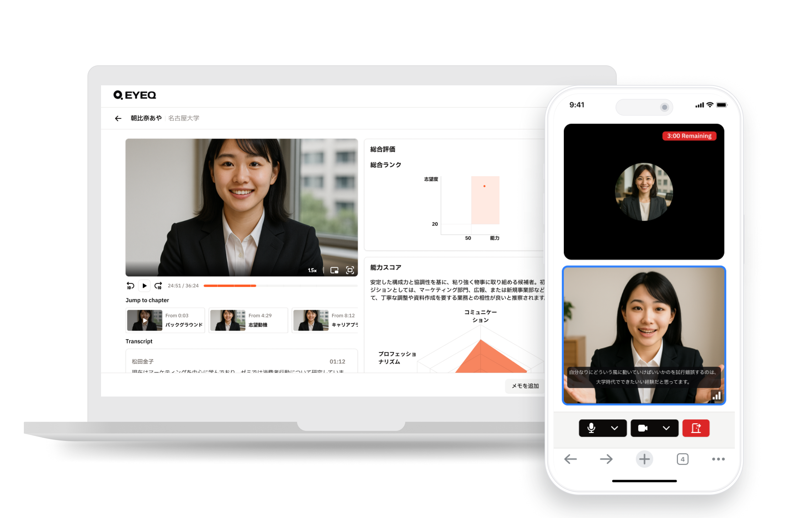
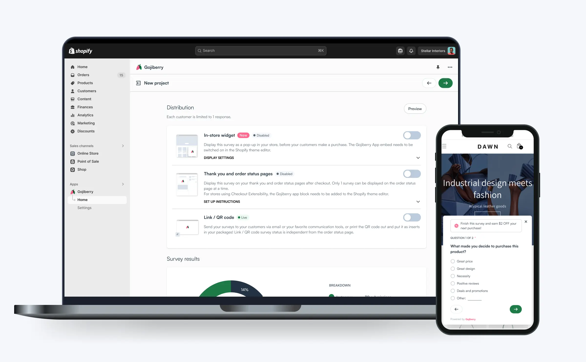
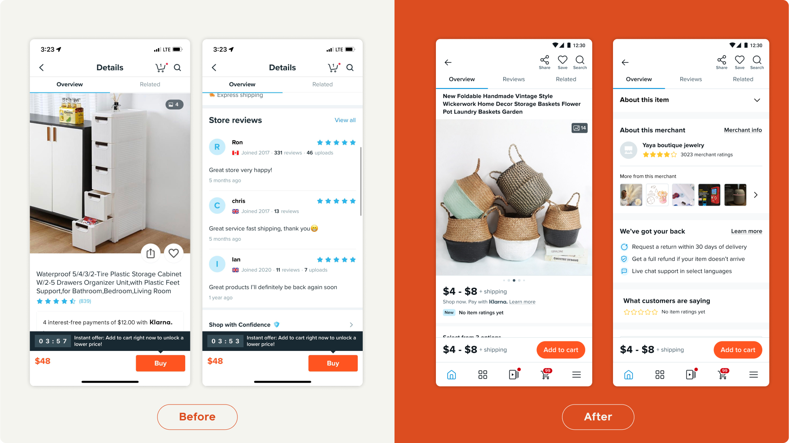
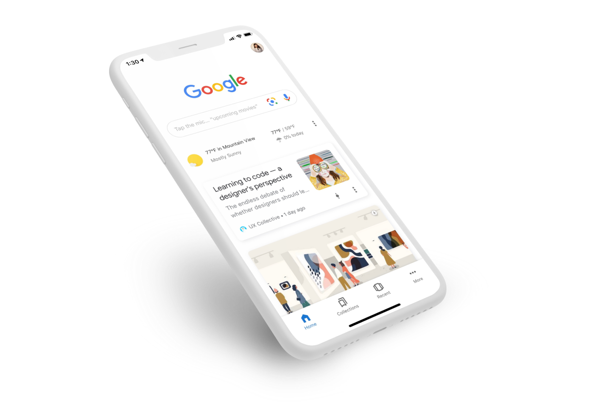
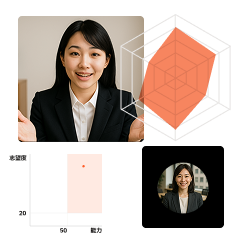
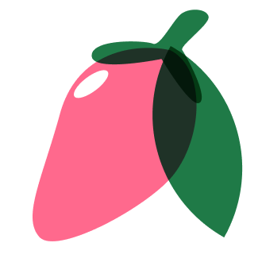
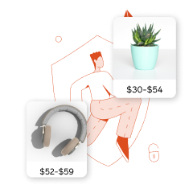

Sherry Wu
Building AI-first tools that rethink talent acquisition in Japan. Previously at Wish, Google, MetaDesign. I also co-founded Gojiberry.
AboutEYEQ
TL;DR
EYEQ lets AI handle the first interview in the new grad hiring process in Japan—bringing out real stories and turning them into fair insights for recruiters.

Gojiberry
TL;DR
Gojiberry is a tool built for Shopify store owners to collect zero-party data about their customers.

Product Details Page on Wish
TL;DR
I led the redesign of Product detail page on Wish with the goal to increase user trust and price transparency on our platform.

iOS Google App Welcome Experience
TL;DR
During my time in the iOS Google App team, I was responsible for rethinking the onboarding experience for the app. Collaborating with engineers, product managers, and motion designers, I developed and refined the onboarding experience to connect the value propositions on the App Store with the first-launch experience and to educate users about app features.

Project
Name
Type

EYEQ
AI Interview platform for new graduate students in Japan
0 to 1, SaaS, AI

Gojiberry
Shopify app for surveys and product quizzes
0 to 1 product, SaaS tool

Product details page on Wish
Increasing trust on platform with the PDP redesign
Redesign, Interface
Welcome experience for the iOS Google App
User education, onboarding
Project
Name
Type
EYEQ
AI Interview platform for new grad students in Japan
0 to 1, SaaS, AI
Gojiberry
Shopify app for surveys and product quizzes
0 to 1 product, SaaS tool
Product details page on Wish
Increasing trust on platform with the PDP redesign
Redesign, Interface
Welcome experience for the iOS Google App
User education, onboarding